Vehicle Expenses Automated — full illustrated user manual (HTML for browsers). Edit source: docs/i18n/de/user-manual.md; regenerate with ./scripts/render-user-manual.sh.
Quelle bearbeiten (Markdown). Browser und der In-App-Reader öffnen den gerenderten HTML:
- Web:docs/user-manual.html(neu generieren mit./scripts/render-user-manual.sh)
- App: Hilfe / Info → vollständiges Handbuch (gebündeltes HTML + Screenshots)Weisen Sie Endbenutzer nicht auf unformatierte „.md“-URLs hin – Browser zeigen nur Klartext an.
Kamerabasierte Verfolgung von Tankfüllungen und Fahrzeugkosten, mit optionaler Synchronisierung und Sicherung mehrerer Geräte unter Ihren Cloud-Konten.
Dies ist das vollständige Handbuch (Screenshots + jeder Schritt). Auf dem Telefon ist Menü → Hilfe eine kürzere Kurzanleitung.
Hier nicht behandelt: Alte Bilder importieren, Ausrichtungsexperiment und Pumpenexperiment (Entwickler-/erweiterte Tools).
Diese erscheinen auf den Hauptbildschirmen. Wenn man sie kennt, erspart man sich viel Jagd.
| Wo | Symbol / Steuerung | Was es tut |
|---|---|---|
| Obere Leiste | ☰ Menü (Hamburger) | Öffnet die Navigationsleiste |
| Obere Leiste | ⓘ (Seitenhilfe) | Kurzhilfe zur aktuellen Seite (neben dem Menü, sofern verfügbar) |
| Obere Leiste | ?N (gelb) |
Ausstehende Importüberprüfungsfragen – öffnet Importüberprüfung |
| Obere Leiste | ! (rot) | Eine Tabellenkalkulation oder ein Fotoziel ist kürzlich fehlgeschlagen. Öffnen Sie Synchronisierung, um das Problem zu beheben |
| Obere Leiste | ☰ + ← | Kinder melden und Ausgabenliste zeigen Menü und zurück zusammen an; Der Berichts-Hub ist nur im Menü verfügbar |
| Einstellungen / Kraftstoff bearbeiten | ← | Zurück (Einstellungen, Tabellenkalkulation/Foto und Kraftstoffbearbeitung bleiben im Fokus) |
| Schnellfüllung | Weißer Kreis (Verschluss) | Erfassen Sie die Kilometerzähler- oder Pumpenanzeige für OCR |
| Schnellfüllung | Datenträger / Speichern | Sparen Sie das Tanken (benötigt ein Fahrzeug und mindestens eines von odo / Volumen / Kosten) |
| Schnellfüllung | ↕ Pfeile (Modusschalter) | Schalten Sie zwischen Kilometerzählermodus und Pumpenmodus (Kosten/Volumen) um. Der grüne Rand markiert die aktive Feldgruppe |
| Schnellfüllung | ↔ Pfeile (zwischen Kosten und Volumen) | Kosten und Volumen vertauschen, wenn OCR sie in die falschen Felder einfügt |
| Schnellfüllung | Zoom 1x / … | Zoomverhältnisse der Kamera, wenn das Objektiv sie unterstützt |
| Quick Fill (nach der Aufnahme) | Aktualisieren auf der Hauptschaltfläche | Vorschau verwerfen und zur Live-Kamera zurückkehren |
| Quick Fill (während der Verarbeitung) | X auf der Hauptschaltfläche | Laufende Erfassung/OCR abbrechen |
| Aufwand | Speichern | Sparen Sie die Kosten |
| Aufwand | Verschlusskreis | Machen Sie ein Quittungsfoto |
| Aufwand | Galerie | Wählen Sie ein Belegbild aus der Bibliothek aus |
| Aufwand | Wiederholung | Aktuelles Belegfoto löschen und erneut aufnehmen |
| Kosten / Fahrzeuge verwalten | + / − FABs | Zoomen Sie die Fotovorschau |
| Dialogfeld „Sehenswürdigkeiten“ | OCR bearbeiten | Korrigieren oder fügen Sie wegweisenden Text hinzu, den die Engines übersehen haben |
| Tabellenkalkulation / Fotoformulare | 🔍Suche | Durchsuchen Sie Google Drive nach einem Blatt oder Ordner (nach der Anmeldung) |
Währungssymbole in Kostenfeldern und Hauptbuch in Volumenfeldern können angetippt werden: Öffnen Sie ein kleines Menü, um die Währung oder Gallonen vs. Liter für diesen Eintrag zu ändern.
Hauptschublade: Schnelltanken · Fahrt starten · Fahrzeuge verwalten · Neue Ausgaben · Berichte · Einstellungen · Synchronisierung · Hilfe · Info.
Experimentschublade (Einstellungen → Experimentbildschirme anzeigen): Ausrichtungsexperiment · Pumpenexperiment · Alte Bilder importieren.
Über den Berichts-Hub (nicht über die Hauptschublade): Spesenliste · Verlauf ausfüllen.
OCR und automatischer Fahrzeugabgleich funktionieren am besten, nachdem Sie jedes Fahrzeug mit einem Referenz-Dashboard-Foto registriert, den Kilometerzähler zugeschnitten und Discovery ausgeführt haben, damit die App Orientierungstext für dieses Armaturenbrett speichert. (Wie Orientierungspunkte ausgewählt und zugeordnet werden, wird in einem späteren Update detaillierter dokumentiert.)
Menü → Fahrzeuge verwalten. Wählen Sie ein Fahrzeug (oder Neues Fahrzeug hinzufügen).
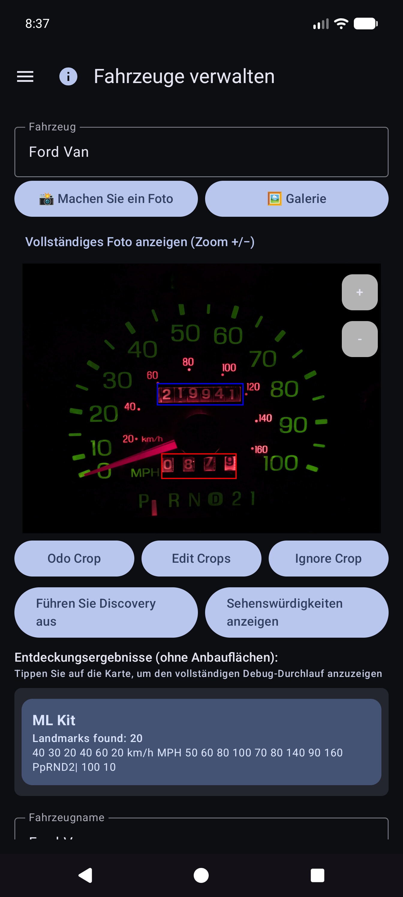

Scrollen Sie nach Sehenswürdigkeiten anzeigen durch die Liste und korrigieren Sie die Werte. Bei Engines fehlen manchmal kleine Ziffern (z. B. eine Uhr 60 unten rechts im Cluster). Verwenden Sie OCR bearbeiten, um sie hinzuzufügen oder zu korrigieren, damit die Fahrzeugidentität zuverlässig bleibt.
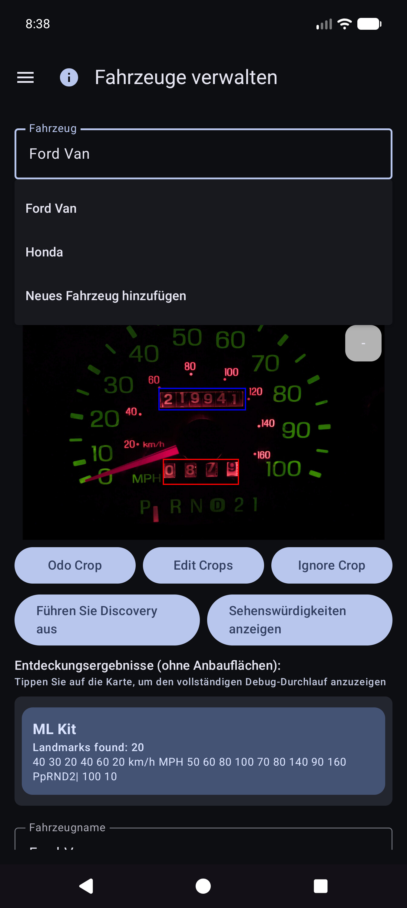
Sie können die App weiterhin verwenden, indem Sie ein Fahrzeug auswählen und Kilometerzähler, Volumen und Kosten in Quick Fill eingeben – OCR ist für jedes Feld optional. Der Galerieimport funktioniert für das Referenz-Dash-Foto, wenn Sie nicht in der App fotografieren möchten.
Tipp: Nach der Synchronisierung der Tabellenkalkulation sind die Fahrzeugdefinitionen (Kulturpflanzen, Orientierungspunkte) in der lokalen Datenbank gespeichert – Sie müssen „Fahrzeuge verwalten für Quick Fill“ nicht erneut öffnen, um sie zu verwenden.
Die App ist so konzipiert, dass mehrere Telefone oder Tablets dieselben Flottendaten teilen können und dass Sie eine Kopie Ihrer Daten und Fotos vom Gerät fernhalten können. Dies erfolgt über Ziele, die Sie unter Ihren Konten oder Ihren selbst gehosteten Servern konfigurieren – und nicht über eine vom Unternehmen betriebene „Fahrzeugkosten-Cloud“, die andere Personen sehen können.
| Freundlich | Was es speichert | Typische Verwendung |
|---|---|---|
| Tabellenkalkulation/Tabellensynchronisierung | Fahrzeuge, Tankfüllungen, Ausgaben (Zeilen und Registerkarten) | Zusammenführung mehrerer Geräte + strukturiertes Backup |
| Fotosicherung | Binärbilder (Armaturenbrett/Pumpe/Quittung/Referenzfotos) | Fotosicherung + fehlende Dateien wiederherstellen |
Sie können mehrere Ziele jedes Typs konfigurieren (Soft-Cap pro Typ). Manuelle Jetzt synchronisieren- und Hintergrund-Worker führen die aktivierten Worker aus.
Anmeldung und Token bleiben für die von Ihnen ausgewählten Anbieter (Google, Microsoft, S3-Schlüssel, selbst gehostete URLs usw.) auf dem Gerät. Die Ziele unterliegen der vollständigen Kontrolle des Benutzers – Ihrem Google-Konto, Ihrem OneDrive, Ihrem MinIO-Bucket, Ihrem EtherCalc-Host usw. Über ein gemeinsames Backend wird nichts mit anderen Vehicle Expenses-Benutzern geteilt.
Konfiguriert unter Menü → Synchronisierung → Tabellenkalkulationssynchronisierung (auch über die Zusammenfassungszeilen der Einstellungen erreichbar). Erstklassige Picker-Optionen:
| Ziel | Notizen |
|---|---|
| Google Sheets | Gemeinsamer Standard; Registerkarten für Fahrzeuge, Ausgaben und Kraftstoff pro Fahrzeug |
| Excel | Microsoft-Arbeitsmappe über Graph-/OneDrive-Bindung |
| EtherCalc | Selbstgehostete kollaborative Tabellenkalkulationsräume |
| Andere → implementierte Backends | Baserow, NocoDB, Airtable, PocketBase, Supabase, Firebase, Zoho Sheet |
Zurückgestellt/noch nicht Headless (unter Andere aufgeführt, aber nicht vollständig implementiert): OnlyOffice, Collabora. Siehe auch Self-Host-Index.
CSV Export/Import (ZIP mit demselben Tab-Layout) ist in den Einstellungen als tragbares Backup verfügbar, unabhängig von der Live-Synchronisierung.
Konfiguriert unter Menü → Synchronisierung → Fotosicherung (auch aus den Zusammenfassungszeilen der Einstellungen):
| Ziel | Notizen |
|---|---|
| Google Drive | Von Ihnen ausgewählter Ordner (URL durchsuchen oder einfügen) |
| OneDrive | Microsoft-Konto + Pfadpräfix |
| S3 | AWS, Wasabi, Cloudflare R2, MinIO und andere S3-kompatible Endpunkte |
| Andere | rclone-gestützter Speicher (z. B. WebDAV, SFTP und andere kuratierte Remotes, die in der In-App-Auswahl verfügbar sind) |
Richten Sie Cheatsheets für selbst gehostete Foto- und Tabellenziele ein: self-host index.
– Zeilen werden nach Sync-ID mit Last-Write-Wins auf Aktualisierten Zeitstempeln zusammengeführt.
- Löschvorgänge sind weich; Eine neuere Bearbeitung auf einem anderen Gerät kann eine Zeile wiederherstellen.
- Wenn Sie auf zwei Geräten die gleiche Füllung zweimal eingeben, entstehen zwei Zeilen – löschen Sie die zusätzlichen Zeilen, wenn Sie es bemerken.
- Weitere Details: Verhaltenshinweise synchronisieren und SYNC_BEHAVIOR.md.

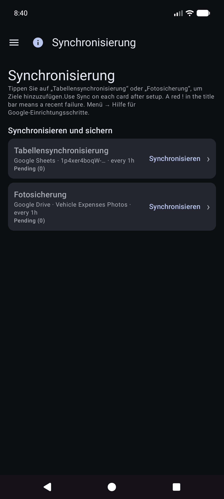


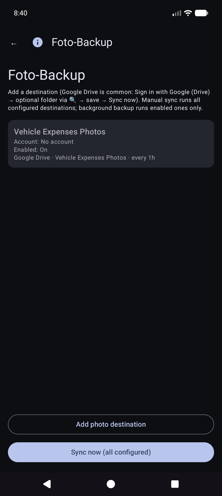
Manuelles Jetzt synchronisieren für Fotos ist ein vollständiger Durchgang; Die Hintergrundsicherung verarbeitet normalerweise nur ausstehende Uploads nach einem Zeitplan.
Dies ist der Startbildschirm, wenn Sie die App öffnen.
Sie müssen nicht zuerst das Fahrzeug auswählen. Wenn für Fahrzeuge in „Fahrzeuge verwalten“ Orientierungspunkte eingerichtet sind, erkennt Quick Fill automatisch anhand des Armaturenbrettbilds, welches Fahrzeug ist, nachdem Sie den Kilometerzähler erfasst haben. Sie können weiterhin das Dropdown-Menü Fahrzeug** öffnen, um es bei Bedarf zu überschreiben.
Bleiben Sie im Kilometerzählermodus und rahmen Sie den Cluster ein. Anleitung: Zielen Sie auf den Kilometerzähler. Tippen Sie zum Aufnehmen auf den Auslöser.
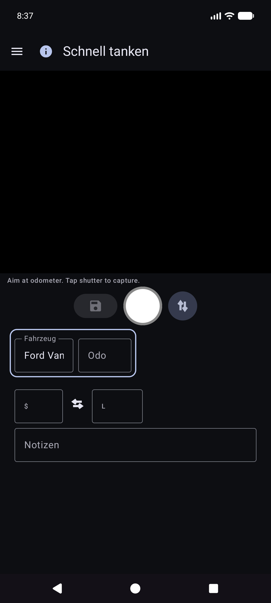
OCR füllt Odo aus und versucht, das Fahrzeug anhand von Orientierungspunkten abzugleichen (überprüfen Sie bei Bedarf beide). Die Hauptschaltfläche wird zu Wiederholen, um erneut zu schießen. Die Anleitung fasst die Lektüre zusammen.


Sie bleiben für den nächsten Stopp auf Quick Fill (Felder werden nach dem Speichern gelöscht). Vollständig offline arbeiten; Die Synchronisierung wird bei entsprechender Konfiguration später im Hintergrund ausgeführt.
Tipp auf dem Bildschirm (unterhalb der Anweisungszeile): Auslöser = Aufnahme · Festplatte = Speichern · ↕ = Odo-/Pumpmodus · ↔ = Kosten/Volumen tauschen.
Menü → Neue Ausgabe.

Menü → Berichte → Ausgabenliste – durchsuchen Sie vergangene Ausgaben, die nicht mit Treibstoff zusammenhängen; Öffnen Sie ein Element zum Bearbeiten.

Öffnen Sie eine Zeile aus der Liste. Korrigieren Sie Anbieter, Menge, Kategorie, Fahrzeug und Beschreibung. Wenn sich die Quittung nur in der Fotosicherung befindet (keine lesbare lokale Datei), verwenden Sie Bild aus Archiv abrufen, wenn angezeigt (funktioniert für alle konfigurierten Fotoziele).

Menü → Fahrt starten (nach Quick Fill in der Schublade). Erfassen Sie den Kilometerzähler oder geben Sie ihn ein, wählen Sie den Fahrttyp und speichern Sie ihn mit dem Diskettensymbol. Stop ist eine Abkürzung für „Persönlich jetzt“ am gehaltenen GPS-Standort. Verwenden Sie ⓘ für Kontrollerinnerungen.

Fahrtbeginne werden als Kraftstoffzeilen mit einem Fahrttyp gespeichert (keine normalen Füllungen). Sie erscheinen unter Berichte → Fahrtmeilen, nicht unter Kraftstoffverlauf.
Menü → Berichte öffnet den Produkt-Hub (allzeitige Zusammenfassung + Katalogkarten). Dies ist die einzige Produktberichtsoberfläche – es gibt kein separates Schubladenelement „Berichte und Diagramme“.

Öffnen Sie eine Karte für den Fahrzeugmodus (Alle / Jeder / Einzeln), Zeitraumfilter, Diagramme und Teilen (TEXT / CSV / PDF). Obere Leiste bei Berichtskindern: ☰ + ← (und ⓘ bei Registrierung).
Die Hauptkartenkarte. Optionale Metriken (MPG, Volumen/Entfernung wie G/Meilen, Stückpreis wie $/G, Kosten/Entfernung, monatliche $, Reisemeilen, Reise-% nach Typ) mit glatten Bins und unabhängigen Y-Skalen (Economy links; Geld- und Reisefamilien rechts).

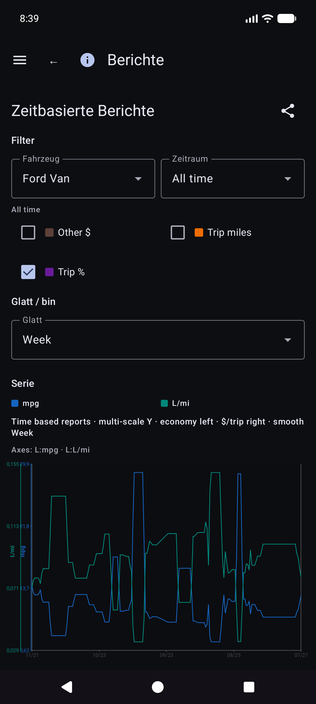
Details zur Wirtschaftsmathematik: REPORTS_METRICS.md.
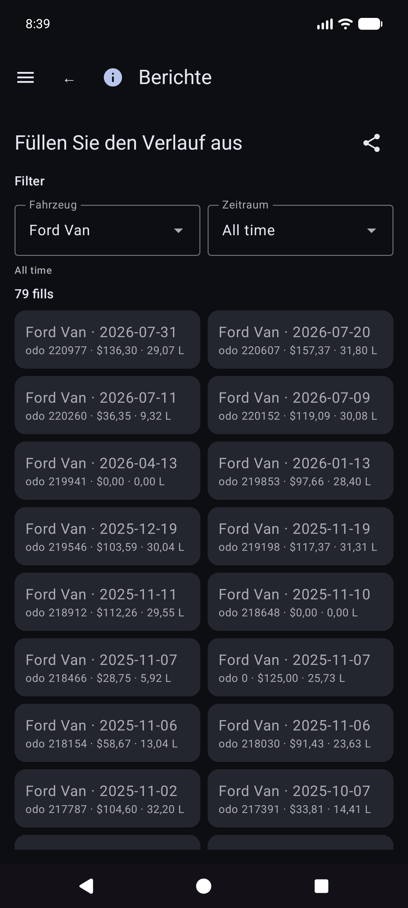
Berichte → Reisemeilen – Meilen nach Typ, Diagramme und eine chronologische Reisestart-/Segmentliste. Tippen Sie auf einen echten Anfang, um Füllung bearbeiten für diese Zeile zu öffnen.

Öffnen Sie unter Füllhistorie, Kraftstoffhistorie oder Fahrtmeilen eine Füllung. Layout: Fahrzeug und Kilometerzähler, Währung vor Kosten, Volumen, Notizen. Der Reisetyp wird nur angezeigt, wenn es sich bei der Zeile um einen Reisebeginn handelt. Der Standort verfügt über eine Zusammenfassung sowie Standortdetails. Fehlendes lokales Foto mit Cloud-Identität: Bild aus Archiv abrufen.
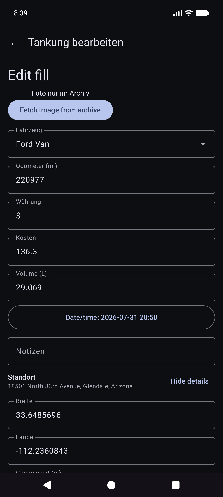
Zu den weiteren Katalogkarten gehören Ausgaben nach Kategorie, eine Fahrzeugübersicht und eine Ausgabenliste.
Für Geld wird die Währung jeder Zeile verwendet, wenn diese festgelegt ist. Gesamtsummen in gemischten Währungen zeigen Zwischensummen pro Währung (keine stille Devisenumrechnung).
Menü → Synchronisierung ist die Zentrale für Tabellenkalkulations- und Fotoziele (nicht nur unter „Einstellungen“ vergraben).
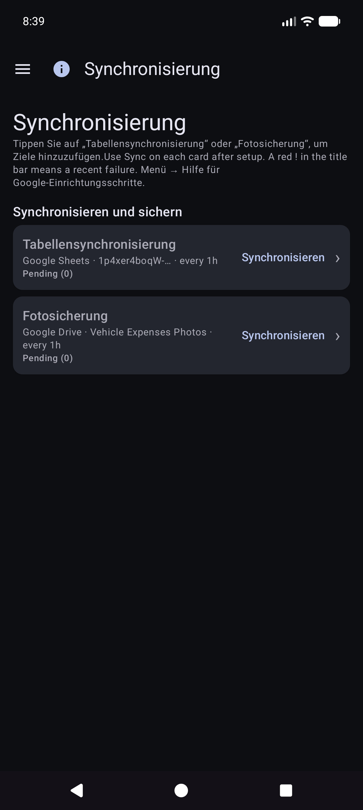
Menü → Einstellungen.

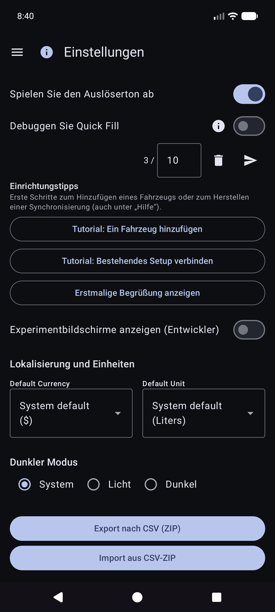
Für Ziele bevorzugen Sie Menü → Synchronisierung. In den Einstellungen werden möglicherweise weiterhin Zusammenfassungszeilen angezeigt, die dieselben Listen öffnen.
CSV Export/Import (Postleitzahl der Registerkarten „Fahrzeuge/Ausgaben/Kraftstoff“) ist in den Einstellungen verfügbar, sofern dies im aktuellen Build angeboten wird.
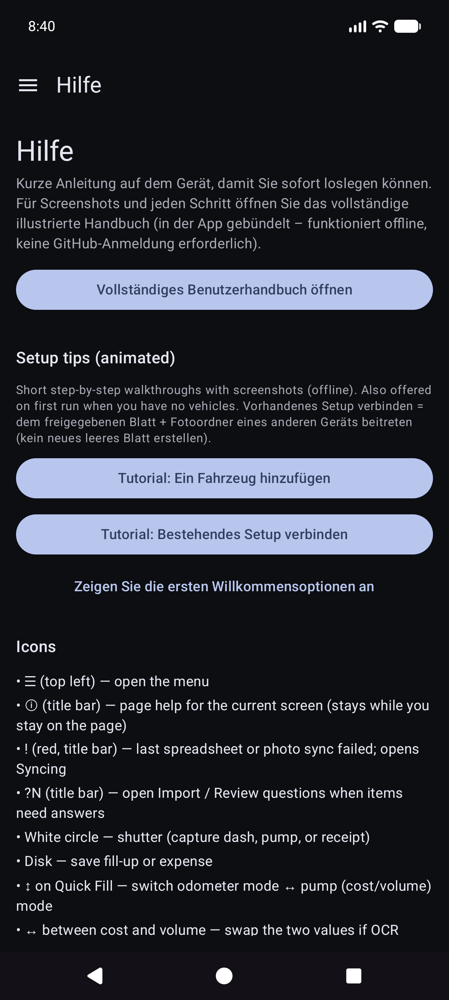
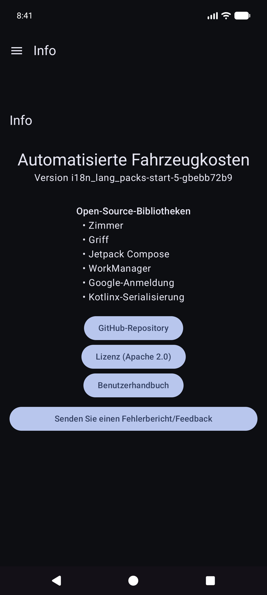